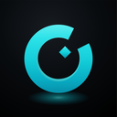

抖查查 · 热销商品
抖音尚未采集。
电商 · AI 工具 · 内容创作 · 商业线索
Obsidian 内自动连接，独立预览需本机凭证。
多路来源，逐层筛选，留下值得关注的信号。
销量是区间值，不是精确成交；每天一次即可。深层数据、翻页与商品明细需要登录或付费，不在此采集。
尚未采集。
尚未采集。
有真实需求与可比样本后，再定位机会。
到期退出展示，长期收藏保留。
保留摘要、来源和个人判断，导出待验证草稿。

AIHOT数字生命卡兹克 · 公开MCP
邮箱用图片显示，避免被爬虫采集；需要发信时点「复制」。